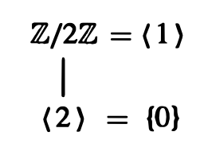
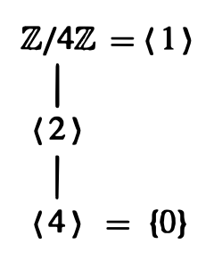
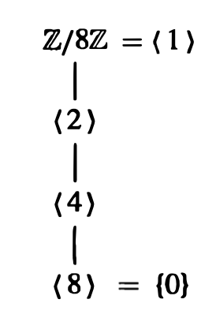
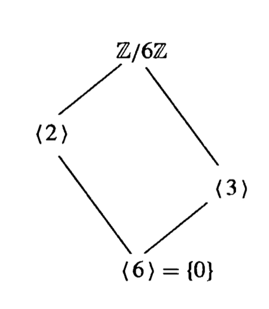
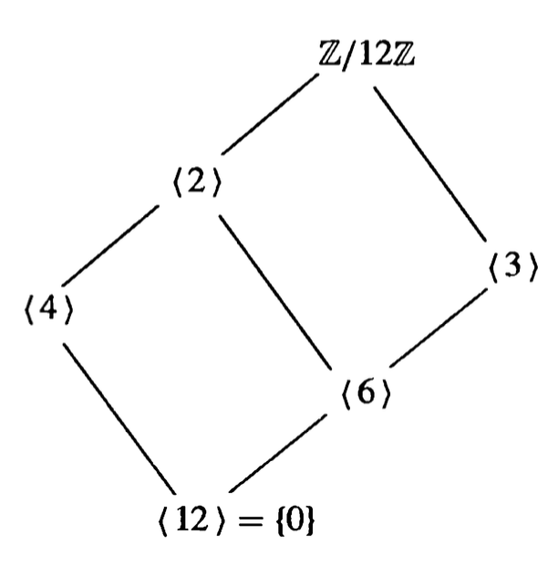
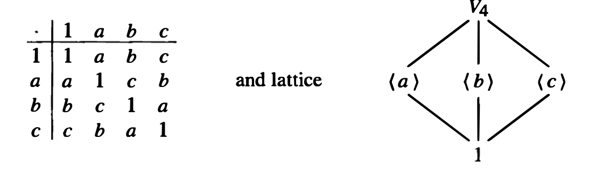
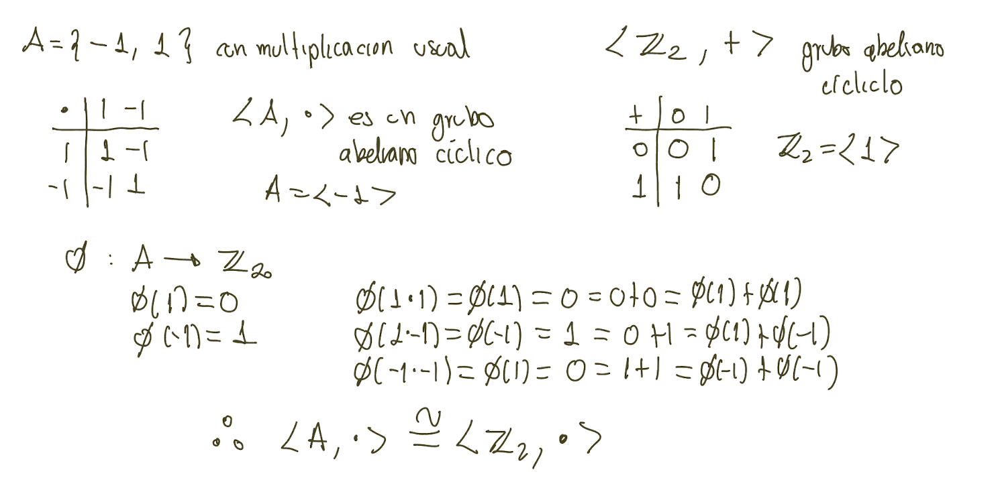
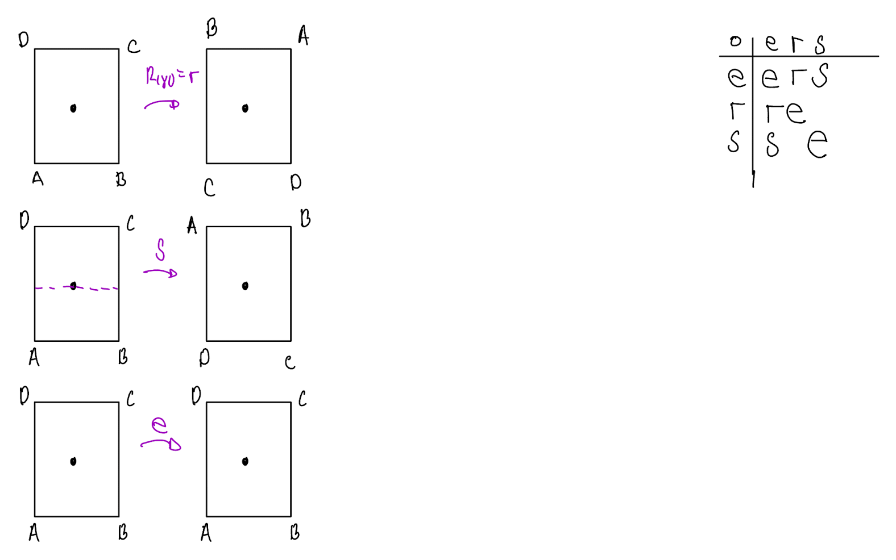
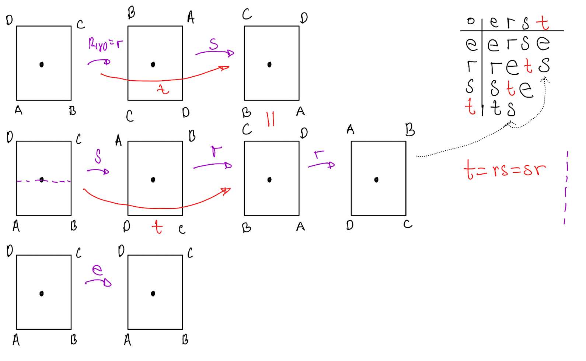
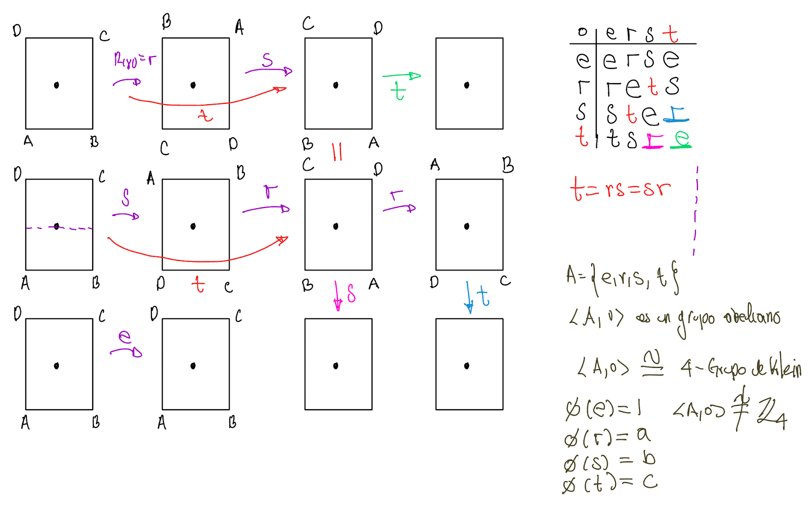

Criptografía I: Matmáticas para criptografía
Estructuras algebráicas
Grupo
Definiciones básicas
Sea \(A\) un conjunto (no vacío). Una operación binaria es una función \(\ast:A\times A \longrightarrow A\) que asigna a cada par \((a,b)\), \(algún\) elemento \(c\) de \(A\). En lugar de escribir \(\ast(a,b)=c\) se escribe \(a \ast b=c\)
Una operación binaria \(*\) en \(G\) es asociativa si \(\forall\) \(a,b,c\in G\) se tiene que \(a*(b*c) = (a*b)*c\)
Una operación binaria \(*\) en \(G\) es conmutativa si \(\forall\) \(a,b\in G\) se tiene que \(a*b = b*a\)
La suma en los números naturales, \(+:\mathbb{N}\times\mathbb{N}\longrightarrow\mathbb{N}\), \(+(1,3)=4\) que se escribe \(1+3=4\).
El producto de números racionales, \(\otimes:\mathbb{Q}\times\mathbb{Q}\longrightarrow\mathbb{Q}; \otimes(\frac{3}{4},\frac{1}{5})=\frac{3}{20}\); que se escribe como \(\frac{3}{4} \otimes\frac{1}{5}=\frac{3}{20}\).
Definición de grupo
Un grupo es una pareja ordenada \((G,*)\) donde \(G\) es un conjunto y \(*\) es una operación binaria en \(G\) que satisface los siguientes axiomas
(G1) \((a*b)*c= a*(b*c)\) \(\forall\) \(a,b,c\in G\) (asociatividad)
(G2) Existe un elemento \(e\in G\) llamado identidad de \(G\) tal que \(\forall\) \(a\in G\) tenemos \(a*e=e*a = a\)
(G3) Para cada \(a\in G\), \(\exists\, a^{-1}\in G\), llamado inverso de \(a\), tal que \(a*a^{-1}=a^{-1}*a=e\)
(G4) El grupo \((G,*)\) es llamado abeliano (o conmutativo) si \(a*b =b*a\) \(\forall\) \(a,b\in G\)
Nota: La propiedad de cerradura es equivalente a operación binaria y viceversa
Anillos
La primer estructura algebráica con dos operaciones
Definición de anillo
Un anillo \(\langle R,+, \cdot\rangle\) (una tupla) es un conjunto \(R\) junto con dos operaciones binarias \(+\text{ y }\cdot\), que llamamos suma y multiplicación, definidas en \(R\) tales que se satisfacen los siguientes axiomas:
\(\mathscr{R}_1\langle R,+\rangle\) es un grupo abeliano.
\(\mathscr{R}_2\) La multiplicación es asociativa.
\(\mathscr{R}_3\) Para todas las \(a, b, c \in R\), se cumple la ley distributiva izquierda
\[a(b+c)=(a b)+(a c)\]
y la ley distributiva derecha
\[(a+b) c=(a c)+(b c)\]
Un anillo en donde la multiplicación es conmutativa es un anillo conmutativo.
Un anillo \(R\) con identidad multiplicativa 1 tal que \(1 x=x 1=x\) para todas las \(x \in R\) es un anillo con unitario.
Una identidad multiplicativa en un anillo es un elemento unitario.
Sea \(R\) un anillo con unitario. Un elemento \(u\) en \(R\) es una unidad de \(R\) si tiene un inverso multiplicativo en \(R\).
Si todo elemento distinto de cero (identidad aditiva) en \(R\) es una unidad, entonces \(R\) es un semi campo o anillo con división.
Campo o cuerpo
Los campos o cuerpos son anillos de división conmutativos.
Definición de campo
Un campo es una tupla \((F,+,\cdot)\) tal que
\((F,+)\) es un grupo abeliano con identidad \(0\)
\(\left(F-\{0\},\cdot\right)\) es un grupo abeliano con identidad \(1\)
Se satisfacen leyes distributivas, \(\forall\) \(a,b,c\in F\)
- \((a+b)\cdot c = a\cdot c + b\cdot c\)
- \(a\cdot (b+c) = a\cdot b + a\cdot c\)
- La característica de un campo \(F\), es definida como el entero positivo más pequeño \(p\), tal que \(p\cdot 1_F=0_F\) si tal \(p\) existe, de lo contrario se dice que la característica es \(0\).
Módulo
Los módulos pueden pensarse como una generalización de los espacios vectoriales, donde los escalares no tienen que estar en un campo. Los escalares viven en un anillo.
Definición de Módulo
Sea \((R,+_,\cdot)\) un anillo (no necesariamente conmutativo o con \(1\)) . Un \(R\)-módulo izquierdo o un módulo izquierdo sobre \(R\) es un conjunto \(M\) tal que
\((M,+_m)\) es un grupo abeliano
Existe una función \(\cdot_a: R \times M \rightarrow M\) (llamada acción de \(R\) en \(M\)) que satisface
- \((r+s)\cdot_a m=r\cdot_a m+_ms\cdot_a m\), \(\forall\) \(r, s \in R, m - \in M\),
- \((r\cdot s)\cdot_a m=r\cdot_a(s\cdot_a m)\), \(\forall\) \(r, s \in R, m \in M\),
- \(r\cdot_a(m+_mn)=r\cdot_am+_mr\cdot_an\), \(\forall\) \(r \in R, m, n \in M\).
Si el anillo \(R\) tiene 1 se impone el siguiente axioma:
- \(1\cdot_a m=m\), \(\forall\) \(m \in M\).
\(M\) es un \(R\)-módulo izquierdo
- Se dice que es izquierdo porque los elementos del anillo operan del lado izquierdo, de igual forma se puede definir módulo derecho. Ejemplos
Espacio vectorial
Los espacio vectoriales son módulos donde el anillo que actua sobre el grupo abeliano resulta ser un campo.
Definición de espacio vectorial
Sea \((F,+_,\cdot)\) un campo. Un espacio vectorial sobre \(F\) (o un módulo sobre el campo \(F\)) es un conjunto \(V\) tal que
\((V,+_v)\) es un grupo abeliano
Existe una función \(\cdot_a: F \times V \rightarrow V\) (llamada acción de \(F\) en \(V\)) que satisface
- \((r+s)\cdot_a v=r\cdot_a v+_vs\cdot_a v\), \(\forall\) \(r, s \in F, v \in V\),
- \((r\cdot s)\cdot_a v=r\cdot_a(s\cdot_a v)\), \(\forall\) \(r, s \in F, v \in V\),
- \(r\cdot_a(v+_vw)=r\cdot_av+_vr\cdot_aw\), \(\forall\) \(r \in F, v, w \in V\).
- \(1\cdot_a v=v\), \(\forall\) \(v \in V\).
\(V\) es un espacio vectorial sobre \(F\)
Curvas Elípticas
Las curvas elípticas son parejas de elementos. A estas parejas se les puede dotar de una estructura de grupo.
Definición de curva elíptica
Sea \(F\) un campo, una curva elíptica es la gráfica de ecuación \[y^2 +a_1xy +a_3y = x^3+a_2x^2+a_4x +a_6 \qquad(1)\] con \(a_1\), \(a_2\), \(a_3\), \(a_4\) y \(a_6\) \(\in \mathbb{F}\), precisando, el conjunto
\[C(\mathbb{F}) = \left\{(x,y)\in\mathbb{F}^2 \mid y^2 +a_1xy +a_3y = x^3+a_2x^2+a_4x +a_6\right\}\] es llamado una curva cúbica afín plana sobre \(\mathbb{F}\)
La Ecuación 1 es llamada Ecuación generalizada de Weierstrass
Si la característica del campo es diferente de \(2\) y de \(3\), entonces la Ecuación 1 se puede llevar a la Forma de Weierstrass, con \(a\), \(b\) \(\in \mathbb{F}\) \[C(\mathbb{F}) = \left\{(x,y)\in\mathbb{F}^2 \mid y^2 = x^3+ ax +b\right\}\]
Sea \(\mathbb{F}\) un campo con característica diferente de dos y de tres. Sean \(a\), \(b\) \(\in \mathbb{F}\), entonces el conjunto
\[E(\mathbb{F}) = \left\{(x,y)\in\mathbb{F}^2 \mid y^2 = x^3+ax +b\right\}\]
donde \(4a^3+27b^2\neq 0\) es llamado curva elíptica
La condición sobre los coeficientes evita que exitan raíces múltiples.
Actividad 03
Grupos II
Subgrupo
Sea \((G,\cdot)\) un grupo
- La identidad en \(G\) es única
- Para cada \(a\in G\), \(a^{-1}\) está determinado de forma única
- \(\left(a^{-1}\right)^{-1}=a\)
- \((ab)^{-1}=b^{-1}a^{-1}\)
En \((G,\cdot)\) un grupo, se satisfacen las leyer de cancelación izquierda y derecha
- Si \(au = av\) entonces \(u = v\)
- Si \(uv = vb\) entonces \(u = v\)
Con esto podemos concluir que las ecuaciones \(ax = b\) y \(ya = b\) tienen solución unica. ¿Cuáles?
Si \(G\) es un grupo finito, entonces el \(\color{red}{\bf orden}\) \(\color{red}{|G|}\) de \(G\) es el número de elementos de \(G\). En general, para cualquier conjunto finito \(S\), \(|S|\) es el número de elementos de \(S\).
Si \(H\) es un subconjunto de un grupo \(G\) cerrado bajo la operación de grupo de \(G\) y si \(H\) es él mismo un grupo bajo esta operación inducida, entonces \(H\) es un \(\color{red}{\bf subgrupo}\) \(\color{red}{\bf de}\) \(G\). Denotaremos por \(H\leq G\) o \(G\geq H\) el hecho de \(H\) es un subgrupo de \(G\), y \(H<G\) o \(G>H\) significará que \(H\leq G\), pero \(H\neq G\).
Un subconjunto \(H\) de un conjunto \(G\) es un subgrupo de \(G\) si y sólo si
\(H\) es cerrado bajo la operación de \(G\);
la identidad \(e\) de \(G\) está en \(H\);
para todos los \(a\in H\) es cierto que \(a^{-1}\in H\) también.
Ejemplo grupo, Ejemplo subgrupo, Actividad 04
Grupos cíclicos
- Conjunto genrador
- Nota
- Grupo cíclico
- Subgrupos generados
- Subgrupos generados II
- \(4\)-Grupo Klein
- Teorema de Lagrange
Un conjunto generador de un grupo \(G\) es un subconjunto \(S\) de G tal que todo elemento de \(G\) puede ser expresado como la operación de un número finito de elementos de \(S\) y de sus inversos. Es este caso escribimos \(G = \big< S \big>\)
- \(\left(\mathbb{Z},+\right)\) está generado por \(\{-1\}\) pero también es generado por \(\{1\}\)
Vamos a la nota …
\(\big< S \big>\) es el subgrupo de G conformado por todos los elementos que pueden ser expresados como el producto de un número finito de elementos de \(S\) y de sus inversos.
- Tomamos a \(\left(\mathbb{Z},+\right)\) entonces \(\big< 3\big>=3\mathbb{Z}\)
Si \(G = \big< S \big>\), los elementos de S se llaman generadores de G. Si el conjunto \(S\) es finito se dice que \(G\) es finitamente generado
Un subgrupo \(G\) que contenga \(a\) debe contener \(aa\), que se denotará como \(a^2\). Entonces debe contener \(a^2a\), lo que se donota por \(a^3\). En general, debe contener \(a^n\) ( en notación aditiva es \(na\)). Un subgrupo que contenga al elemento \(a\) debe contener \(a^{-1}\) y por tanto \(a^{-1}a^{-1}\), que se denotará como \(a^{-2}\) y en general, debe contener a \(a^{-m}\) con \(m\in \mathbb{Z}^+\). Debe contener a la identidad \(e=aa^{-1}\), que se denotará como \(a^0=e\). Un subgrupo que contenga a \(a\) debe contener \(\{a^n\,\mid\,n\in \mathbb{Z}\}\). Las potencias de \(a^n\) no necesariamente son distintas. Además, se cumple la ley usual de los exponentes \(a^na^m=a^{n+m}\) para \(m,\, n\in \mathbb{Z}\).
Un grupo cíclico es aquel grupo que está genrado por un solo elemento.
- \(\left(\mathbb{Z},+\right)\) está generado por \(\{-1\}\) pero también es generado por \(\{1\}\). En particular \(\big< 1 \big> = \mathbb{Z}\), \(\mathbb{Z}\) es finitamente generado.





 Actividad 05
Sea \(G\) un grupo y \(g \in G\). El orden de \(g\) (\(|g|\)) es el número entero positivo más pequeño tal que \(g^n=e\;(ng=e)\)
Si \(|g|=n<\infty\) entonces \(\langle g \rangle = \{g^0,g^1,g^2,\ldots,g^{n-1}\}\text{.}\)
Si \(G\) es cíclico con \(G=\big< g \big>\) entonces \(|G|=|g|\)
Si \(G\) es un grupo finito y \(H\leq G\), entonces el orden de \(H\) divide al orden de \(G\).
Sea \(G\) un grupo finito y \(g \in G\), entonces \(g^{|G|}=e\)
Un grupo de orden primo es cíclico.
Isomorfismos de grupos
Un \(\color{red}{\bf isomorfismo}\) \(\color{red}{\bf entre}\) \(\color{red}{\bf un}\) \(\color{red}{\bf grupo}\) \(\color{red}{G}\) \(\color{red}{\bf y}\) \(\color{red}{\bf un}\) \(\color{red}{\bf grupo}\) \(\color{red}{G'}\) es una función \(\phi\) biyectiva, entre \(G\) y \(G'\), tal que para todo \(x\) y \(y\) en \(G\), \[\phi(xy)=\phi (x)\phi(y).\] Los grupos son \(\color{red}{\bf isomorfos}\) y se denotan como \(G\cong G'\).
Como observación, la operación \(xy\) del miembro izquierdo en \(\phi(xy)=\phi (x)\phi(y)\) es la operación en \(G\), mientras que \(\phi (x)\phi(y)\) del lado derecho la operación en \(G'\).
\(\mathbb R\) bajo la suma es isomorfo a \(\mathbb R^+\) bajo la multiplicación, con \(\phi:{\mathbb R} \rightarrow {\mathbb R^+}\) como \(\phi(x)=e^x\).
Si \(\phi(x)=\phi(y)\Rightarrow e^x=e^y\Rightarrow x=y\). Así, \(\phi\) es inyectiva (uno a uno).
Si \(r\in {\mathbb R^+}\) entonces \(\ln(r)\in {\mathbb R}\), luego \(\phi(\ln (r))=e^{\ln(r)}=r\). Por tanto, \(\phi\) es suprayectiva (sobre) \(\mathbb R^+\).
Para \(x,y\in{\mathbb R}\) se tiene \[\phi(x+y)=e^{x+y}=e^xe^y=\phi(x)\phi(y).\] Así \(\mathbb{R}\cong\mathbb{R}^+\)

\(4\)-Grupo de Klein



